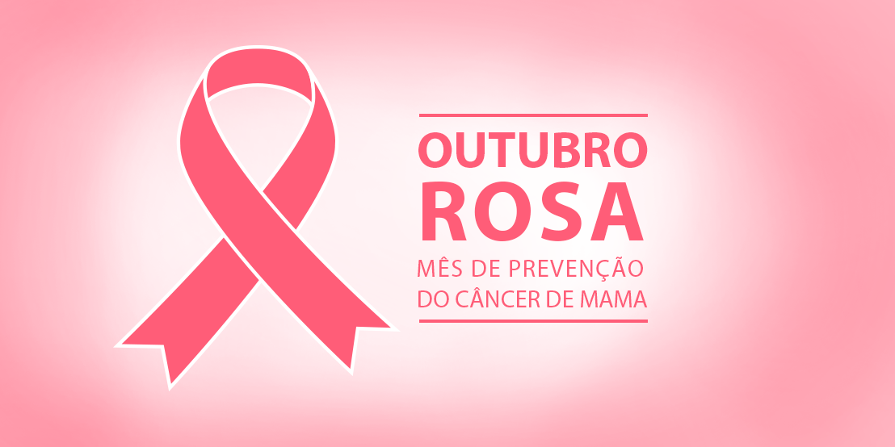

<body bgcolor="#FF00FF"></body>
    


<link rel="stylesheet" href="style.css">

<font size="6">
<p>Outubro é o mês especial dedicado à conscientização sobre o câncer de mama, uma iniciativa global da Organização Mundial da Saúde (OMS) conhecida como “Outubro Rosa”. A Secretaria da Saúde (Sesa) reforça a relevância do cuidado com a saúde da mulher, essencial para o bem-estar de toda a sociedade, salientando que a campanha tem como objetivo alertar a população para a importância da prevenção e detecção precoce do câncer feminino, que afeta milhões de mulheres em todo o Brasil e no mundo.</p>

<p>Cuidar da saúde feminina é um investimento no bem-estar das famílias. A conscientização, o autoconhecimento e o acesso a consultas e exames preventivos é fundamental para a identificação de possíveis alterações no corpo, garantindo um diagnóstico precoce de vários tipos de doenças e também do câncer. Entre os fatores de risco relacionados ao câncer estão a obesidade, o tabagismo e incluem também os maus hábitos alimentares (elevada prevalência de consumo de alimentos ultraprocessados).</p>

<p>A referência técnica da Saúde da Mulher da Sesa, Raquel Azevedo, destaca a importância dos exames de rastreamento: “A realização do preventivo e da mamografia é crucial para a mulher de 50 a 69 anos de idade, a cada dois anos. Esses exames são ferramentas valiosas para detectar sinais precoces de alterações que podem indicar câncer, aumentando as chances de tratamento eficaz e cura.”</p>

<p>O câncer de mama representa um grave problema de saúde pública no Brasil e vem sendo o tipo de câncer mais comum entre as mulheres. O câncer de mama provoca não apenas alterações físicas, mas também afeta significativamente o estado emocional, social e psicológico das pacientes, prejudicando a qualidade de vida e a recuperação.</p>

<p>Em geral, os sinais e sintomas do câncer de mama podem incluir desde nódulos ou massas palpáveis nas mamas ou axilas; mudanças no tamanho ou formato das mamas, alterações na pele como vermelhidão ou aspecto de casca de laranja, até a secreção anormal dos mamilos. É vital que as mulheres estejam atentas a esses sinais e procurem assistência médica imediatamente ao perceber qualquer alteração.</p>

<p>O tratamento do câncer de mama pode variar conforme o estágio e as características do tumor, e podem incluir a cirurgia com a remoção do tumor, nódulo ou mama, o uso da radioterapia como forma de eliminação das células cancerígenas, a quimioterapia e a terapia hormonal, utilizada em casos onde o câncer é sensível a hormônios.</p>

<p>Uma das principais medidas de saúde pública para a detecção precoce do câncer de mama é o rastreamento por mamografia. Este exame é recomendado para mulheres entre 50 e 69 anos de idade, devendo ser realizado a cada dois anos, mesmo na ausência de sinais ou sintomas da doença.</p>
<p>No Espírito Santo, as mulheres têm acesso a esse exame começando pela Atenção Primária na Unidade Básica de Saúde (UBS), onde, durante a consulta, o médico da família ou enfermeiro (a),  solicitam o procedimento. Após a obtenção do resultado, caso necessário, a paciente é encaminhada para uma unidade de referência, onde receberá o tratamento adequado.</p>

<p>A enfermeira e referência técnica da Vigilância Epidemiológica da Sesa, Larissa Dell'Antonio, lembra que o acompanhamento da saúde das mulheres deve ser feito de forma integral, porém faz-se necessário ter uma atenção especial aos cânceres que são mais frequentes entre a população feminina. Assim, é essencial que a mulher realize consultas periódicas como forma de detectar precocemente o câncer. Vale destacar que conhecer o histórico familiar pode auxiliar o profissional de saúde na orientação dos cuidados necessários e na solicitação de exames específicos.</p>

<p>“A busca por consultas e avalições de saúde precisam ser um ato constante pelas mulheres, pois, quanto mais cedo o câncer for diagnosticado, maior a possibilidade de tratamento menos evasivos, melhor a qualidade de vida e maior a sobrevida da paciente" todos contra o câncer.</p>


